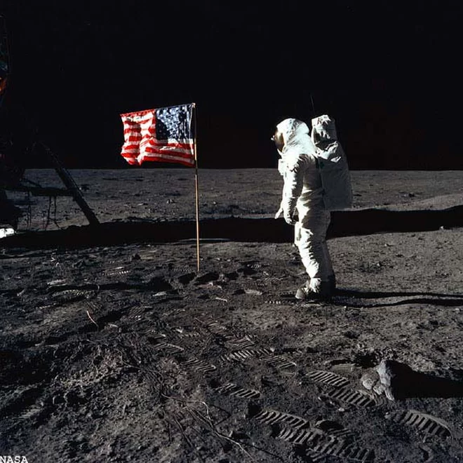

In the late 1960s and early 1970s, NASA launched missions to the moon, which were called the Apollo missions. Some people say that NASA made up the landing on the moon and that it was all fake. They believe that the entire effort was a massively staged event for the world to see.
The American flag is part of the conspiracy theroy because it appears to wave in the lunar wind. Theroists say that if you look closely, you will notice the flag's edges are pulled. This effect, people say, was done purposely so that the flag would look like its waving. The effect was created by inserting a stiff wire into the fabric. The "flutter" was created as the astronauts worked to erect the flag. As the wire was adjusted, it appeared to wave.
In the moon landing photos, the multiple-angle shots prove, so to speak, that there was more than one source of light. The astronauts were taking their photos on a landscape that had hills and a bright landscape, while the sun was close to the horizon. But the images showed a diffferent light source and the ground produced shadows of many lengths.
When the module landed, the powerful engine didn't make a deep crater. The surface of this moon is a dusty surface so there shouldv'e been a big crater from where the module landed. Beneath the layer of dust, the moon is made of fairly densely-packed rock. The dust and loose dirt there was "kicked up" as referenced by the astronauts and captured in their landing films.
Video on theroy